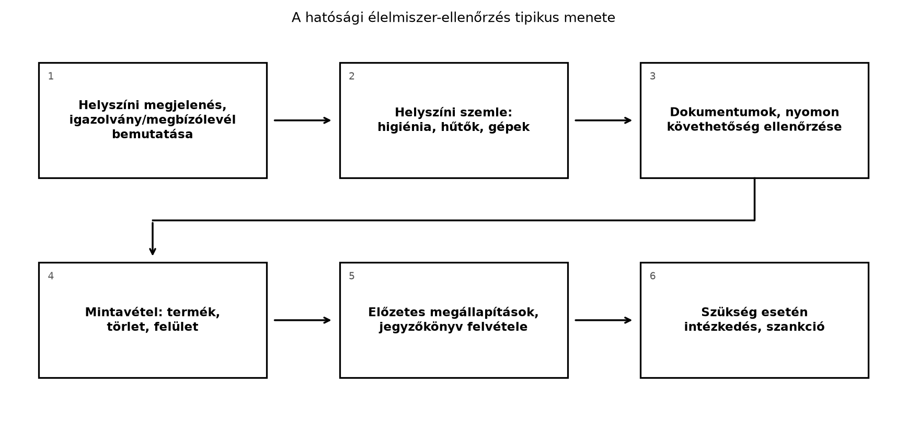
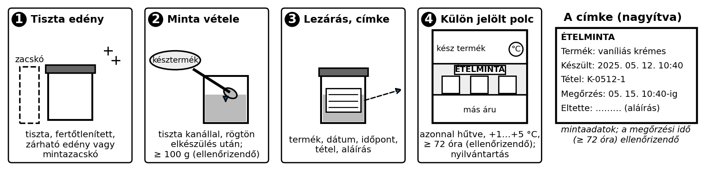

Hétfő reggel van. A cukrászüzemben éppen a hétvégi tortarendeléseket készítik elő. Az üzletvezető a hűtő hőmérsékletét ellenőrzi, amikor az ajtó nyílik, és belép két ellenőr: „Jó napot, a kormányhivatal élelmiszerlánc-biztonsági ellenőrzése.” Az ellenőrzések jellemzően előzetes bejelentés nélkül történnek (ellenőrizendő: 2017/625/EU rendelet, hazai eljárásrend). Ilyenkor nem a pánik segít, hanem az, ha az üzem egész évben olyan állapotban van, mintha az ellenőrzés bármikor érkezhetne. A higiéniai és élelmiszer-biztonsági rendszer akkor működik jól, ha a hatósági ellenőrzés nem rendkívüli esemény, hanem egy pillanatfelvétel a mindennapos szabályos működésről. Ebben az alfejezetben a vendéglátás és a közétkeztetés speciális előírásait, az ételmérgezés bejelentését, a kártevőirtást és a hatósági ellenőrzés menetét tanuljuk meg.
A hatósági ellenőrzés több lépésből álló folyamat. Az alábbi ábra a tipikus menetet mutatja be, amelyet egy cukrászüzemben végzett ellenőrzésnél követhetünk nyomon.

Az ábra azt mutatja, hogy az ellenőrzés nemcsak a termékeket, hanem a dokumentációt, az üzem higiéniáját és a dolgozók gyakorlatát is érinti. A felkészültség tehát nem egyszeri takarítás, hanem folyamatos rendszerműködés.
A cukrászüzemek általában vendéglátó tevékenységet folytatnak, de beszállíthatnak közétkeztetési intézményeknek is. A két területre részben eltérő előírások vonatkoznak.
Jogszabály. A vendéglátás és a közétkeztetés élelmiszer-higiéniai alapjait az 852/2004/EK rendelet határozza meg. Ezt egészítik ki a hazai vendéglátás- és közétkeztetés-specifikus rendeletek, amelyek például az élelmiszer-forgalmazás higiéniai feltételeit, az üzletek kialakítását, a személyi higiéniát és a hűtési láncot szabályozzák (ellenőrizendő: hatályos magyar rendeletek, például a vendéglátó-ipari termékek előállításának és forgalomba hozatalának élelmiszer-higiéniai feltételeiről szóló jogszabály, valamint a közétkeztetésre vonatkozó táplálkozás-egészségügyi előírás).
A közétkeztetésben különösen fontos a tápanyagtartalomra, az étlap tervezésére és a kiszolgált ételek só-, cukor- és zsírtartalmára vonatkozó előírások betartása (ellenőrizendő: 37/2014. (IV. 30.) EMMI rendelet vagy jogutódja). A cukrászatban ez elsősorban az iskolai, óvodai, kórházi desszerteknél jelenik meg. A hagyományos cukrászsütemények magas cukor- és zsírtartalmuk miatt gyakran nem felelnek meg a közétkeztetési korlátoknak, ezért a beszállításhoz külön receptúrákra és kisebb adagokra van szükség.
Definíció. Közétkeztetés alatt a nem magánháztartásban fogyasztóknak, hanem intézményi keretek között (például gyermekétkeztetés, kórházi, szociális, munkahelyi étkeztetés) történő élelmezést értjük. A vendéglátás az a tevékenység, amikor az üzlet készételt, cukrászati készítményt, italt készít és értékesít, gyakran helyben fogyasztásra is.
A vendéglátásra és közétkeztetésre jellemző speciális követelmények közül a cukrászatban kiemelten fontosak:
Jogszabály. A közétkeztetésben és egyes tömeges étkeztetési helyeken az elkészített ételekből ételmintát kell eltenni és meghatározott ideig hűtve megőrizni, hogy esetleges ételmérgezési vizsgálat esetén a minta elemezhető legyen. A cukrászati termékek közül a krémes, tejszínes, tojásos vagy hőkezelés nélkül készült desszertekre ez különösen indokolt lehet (ellenőrizendő: hatályos rendelet az ételminta-eltevés kötelezettségéről, időtartamáról és tárolási hőmérsékletéről, például legalább 72 óra, legfeljebb +5 °C).
Az ételminta célja, hogy ha a fogyasztók megbetegszenek, a laboratóriumi vizsgálat során azonosítani lehessen a kórokozót vagy a kémiai szennyezőt. A minta nem bizonyítja egyedül a hibát, de fontos nyom a kivizsgálásban.
Szabály. Az ételminta eltevésénél be kell tartani a következő gyakorlati eljárást:
A képsor a négy fő lépést mutatja: tiszta, zárható edény; minta vétele tiszta kanállal; lezárás és címke (termék, dátum, időpont, tétel, aláírás); tárolás a hűtő külön jelölt polcán. A mennyiség, a hőmérséklet és a megőrzési idő a fenti, ellenőrizendő tanulási értékek.

A cukrászüzemekben az ételminta eltevése akkor is hasznos, ha nem kötelező, mert egy reklamáció vagy gyanú esetén a saját kivizsgálást is segíti.
Definíció. Ételmérgezés (food poisoning) akkor alakul ki, ha a fogyasztó az élelmiszerrel előre termelődött méreganyagot (toxint) vesz magához, például Staphylococcus aureus enterotoxint vagy Bacillus cereus hánytató toxint. Ételfertőzés (foodborne infection) esetén a megbetegedést élő kórokozó, például Salmonella, Campylobacter vagy Listeria szaporodása okozza a szervezetben. A két fogalom elkülönítése a laboratóriumi vizsgálat feladata, de a bejelentés és a helyszíni intézkedések szempontjából hasonlóan járunk el.
Jogszabály. Az élelmiszer eredetű megbetegedés gyanúját, illetve a fogyasztói panaszt a vendéglátónak és a hatóságnak is kezelnie kell. A bejelentési kötelezettségre, a kivizsgálási rendre és a szükséges intézkedésekre vonatkozó szabályokat a hazai élelmiszerlánc-felügyeleti törvény és a fertőző betegségek bejelentésére vonatkozó epidemiológiai előírások tartalmazzák (ellenőrizendő: 2008. évi XLVI. törvény, valamint a bejelentésre kötelező fertőző betegségek rendszere; a konkrét bejelentési út és határidő üzemenként a NÉBIH és a népegészségügyi hatóság útmutatója szerint alakul).
Szabály. Az üzemi ételmérgezés-gyanú kezelésének lépései:
Fontos, hogy az ételmérgezés gyanúja nem automatikusan jelenti az üzem hibáját. A kivizsgálás célja az ok feltárása, nem a bűnbakkeresés.
Definíció. Kártevő minden olyan állat – rágcsáló, rovar, madár –, amely az élelmiszer-alapanyagokat, a késztermékeket, a csomagolást vagy az üzem szerkezetét károsíthatja, illetve szennyezheti. A cukrászatban leggyakoribb kártevők:
Jogszabály. Az üzemnek saját kötelezettsége a kártevők megelőzése és távol tartása (integrált kártevő-szabályozás, IPM). A kártevőirtás során csak engedélyezett biocid termékek használhatók, az engedélyokiratban foglaltak szerint. A biocid termékek forgalmazását és felhasználását uniós rendelet szabályozza (ellenőrizendő: 528/2012/EU rendelet). A kártevőirtást a vendéglátó üzem saját, képzett dolgozója is végezheti, de a legtöbb üzemben erre szerződött, engedéllyel rendelkező kártevőirtó szakcéget bíznak meg (ellenőrizendő: hazai előírások a kártevőirtó tevékenységről).
Szabály. A kártevőirtás üzemi eljárása:
A nyomok felismerését és egy csapdatérkép felépítését az alábbi rajz mutatja: balra a jellemző nyomok (ürülék, rágásnyom, lisztmoly-szövedék, csótány), jobbra egy szárazáru-raktár alaprajza a fal mentén számozott rágcsálócsapdákkal, ragacslapokkal és a bejárat közelében, nem élelmiszer fölött elhelyezett fénycsapdával.
Higiénia. A biocid termékeket soha nem szabad élelmiszertől, csomagolóanyagtól vagy élelmiszerrel érintkező felülettől nem elkülönítve tárolni. A kihelyezett csalétkeket úgy kell elhelyezni, hogy sem a dolgozók, sem a vendégek ne férhessenek hozzá, és semmiképpen ne kerülhessenek élelmiszerbe. A termékeken feltüntetett biztonsági előírásokat, a várakozási időt és a szellőztetési szabályokat be kell tartani (ellenőrizendő: gyártói biztonsági adatlap).
Jogszabály. Az élelmiszerrel foglalkozó dolgozóknak a munkába állás előtt és utána rendszeresen egészségügyi alkalmassági vizsgálaton kell részt venniük. Ezt a munkáltató szervezi, és a vizsgálatról igazolást kell kiállítani. Emellett a dolgozónak nyilatkoznia kell arról, hogy nincs olyan betegsége vagy tünete, amely az élelmiszerbiztonságot veszélyeztetné (ellenőrizendő: a hatályos közegészségügyi előírások, például a 18/1998. (VI. 3.) NM rendelet vagy jogutódja, valamint az élelmiszerlánc-felügyeleti előírások).
Definíció. Egészségügyi nyilatkozat az a munkavállaló által aláírt dokumentum, amelyben közli, hogy nincs tudomása olyan fertőző betegségről, nyílt sebről, bőrelváltozásról, hasmenésről, hányásról vagy egyéb olyan állapotról, amely az élelmiszerre átvihető kórokozót jelenthet. Ezt a nyilatkozatot rendszeresen meg kell újítani, és a dolgozó személyi anyagában nyilván kell tartani.
A cukrászatban különösen indokolt a dolgozók rendszeres ellenőrzése, mert a Staphylococcus aureus az emberi bőrön, orrban is jelen lehet, és ha fertőzött kézzel nyúlunk a krémhez, a toxin már akkor megjelenhet, amikor a baktérium a termékben elszaporodik.
Szabály. A munkáltató feladatai:
Jogszabály. Magyarországon az élelmiszerlánc-felügyeleti ellenőrzést a NÉBIH (Nemzeti Élelmiszerlánc-biztonsági Hivatal) és a kormányhivatalok élelmiszerlánc-biztonsági és állategészségügyi szervei végzik. A vállalkozás szempontjából az ellenőrzés hivatalból vagy bejelentés alapján indulhat. Az ellenőrök jogosultak belépni az üzem területére, dokumentumokat bekérni, mintát venni, jegyzőkönyvet felvenni (ellenőrizendő: hatályos élelmiszerláncfelügyeleti törvény és a hatósági ellenőrzésre vonatkozó végrehajtási szabályok).
Szabály. A hatósági ellenőrzés szakaszai:
Ez a számozott ellenőrzőlista a cukrászüzem rendszeres önellenőrzésére és a hatósági vizsgálatra való felkészülésre szolgál. A lista nem helyettesíti a hatósági előírásokat, de segít a mindennapi működés rendben tartásában.
Ellenőrzőlista. Hatósági ellenőrzésre felkészítés
Továbbvitt eredmény. Ez az ellenőrzőlista közvetlenül előkészíti a HACCP a cukrászatban: CCP-k, hőmérsékletnapló és helyesbítő tevékenység és az A HACCP-rendszer alapelvei alfejezetben tanult rendszeres önellenőrzést. A hatósági ellenőrzésre való jó felkészültség valójában a folyamatosan működő HACCP-rendszer mellékterméke.
A hatósági ellenőrzésre való felkészültség ellenőrzése nem termékmintán, hanem a rendszer állapotán alapul. A következő szempontokat vizsgáljuk:
Hiba 1: A hatósági ellenőrzésre csak a helyszíni szemle előtt takarítanak. - Tünet: az üzem egyébként elhanyagolt, a dokumentumok hiányosak, a hűtők hőmérséklet-naplója üres. - Ok: a napi higiéniai rutin hiánya, a HACCP-rendszer formális. - Megelőzés/javítás: a napi ellenőrzőlistákat valós adatokkal kell vezetni, a takarítást ütemezetten, dokumentálva végezni.
Hiba 2: A kártevőirtó szert élelmiszer közelében tárolják. - Tünet: a raktárban a polcon csalétek, permetezőszer vagy fertőtlenítőszer az alapanyagok mellett. - Ok: a veszélyes anyagok elkülönítésének hiánya. - Megelőzés/javítás: a biocidokat külön, zárható szekrényben kell tárolni, felcímkézve, a gyártói adatlapokkal együtt.
Hiba 3: Ételmérgezés gyanúját a vendéggel való vitával próbálják elintézni. - Tünet: a vendég panaszát elutasítják, a hatóságot nem értesítik. - Ok: a felelősségtől való félelem, a bejelentési eljárás ismeretének hiánya. - Megelőzés/javítás: minden panaszt rögzíteni kell, a gyanút be kell jelenteni, és együtt kell működni a hatósággal. A gyors, szakszerű reakció csökkenti a kárt és a felelősséget.
Egy 300 adagos esküvői desszertasztalnál a vendégek közül többen hányást és hasmenést tapasztaltak a rendezvény másnapján. A cukrászüzem vezetője azonnal a vőlegény telefonhívásából értesült. Először megnyugtatta a párt, elkérte a panaszosok elérhetőségét, és rögzítette a tüneteket. Ezután értesítette a cukrászüzem minőségbiztosítási felelősét, aki kereste az esküvői rendeléshez tartozó termékek tételazonosítóit. Kiderült, hogy a tejszínhabos képviselőfánk töltelékéből egy adagot a rendezvény előtti napon délután készítettek, és a hűtő hőmérséklet-naplója szerint a hűtő az éjszaka egy pontján +11 °C-ra melegedett, de ezt reggel senki nem értékelte, és a töltelék kiszállításra került; a rendezvényen a desszertasztalon a fánkok kb. 4 órát álltak hűtés nélkül. A vállalkozó azonnal bejelentette a gyanút a hatóságnak, amely mintát vett a visszamaradt termékből és a hűtőből. A laboratóriumi vizsgálat Staphylococcus aureus toxint mutatott ki. Az üzem a hatósággal együttműködve leállította az érintett termékek értékesítését, a hibás hűtőt javíttatta, és a hűtési lánc megszakadását a HACCP-dokumentációban helyesbítő tevékenységként rögzítette. A tanulság: a gyors, szakszerű bejelentés és a nyomon követhetőség segített a kivizsgálásban. A hőmérsékletnapló csak akkor véd, ha az eltérést azonnal helyesbítés követi (termékértékelés, szükség esetén selejtezés); a hűtést igénylő termékek a tálalás alatt is hűtve vagy csak korlátozott ideig tálalhatók (ellenőrizendő: hatályos útmutató).
1. feladat (A). Sorold fel az ételminta eltevésének 5 legfontosabb lépését, és mondd meg, miért fontos a minta az ételmérgezés kivizsgálásában!
2. feladat (A). Igaz vagy hamis? Az egészségügyi nyilatkozatot csak egyszer kell aláírni a munkaviszony kezdetén. Indokold a válaszod!
3. feladat (B). Egy cukrászüzemben a hűtő hőmérséklete a napló szerint az alábbi volt az elmúlt napokban: hétfő 4 °C, kedd 6 °C, szerda 3 °C, csütörtök 5 °C, péntek 7 °C. Melyik napokon lehet hűtési lánc megszakadás, ha a felső határ 5 °C? Milyen helyesbítő tevékenységet javasolsz?
4. feladat (B). Tervezd meg egy kártevőirtási ellenőrzőlista tartalmát a cukrászüzem raktárára! Sorolj fel legalább 6 ellenőrzési pontot, amelyet havonta ellenőrizni kell.
5. feladat (C). Egy vendég telefonon panaszt tesz, hogy a tegnap vásárolt krémes után hasmenése és hányása lett. Mit kell tennie az üzletvezetőnek az első 2 órában? Írd le a lépéseket időrendben, és indokold meg, miért fontos a gyors bejelentés!
6. feladat (D). Tölts ki egy egyszerű hatósági ellenőrzésre felkészítő önellenőrző lapot a saját tanulókonyhádra vagy egy képzeletbeli cukrászüzemben. Az ellenőrzőlistában szerepeljen legalább 8 pont, és minden ponthoz adj értékelést (megfelelő / javítandó). Ezután fogalmazz meg egy rövid intézkedési tervet a javítandó pontokra.
Önellenőrzés – válaszok
1. feladat (A) megoldása. Az ételminta eltevésének lépései: 1. Tiszta, zárható, felcímkézett edény előkészítése. 2. A mintát közvetlenül a késztermék elkészülte után kell eltenni. 3. A minta mennyiségét az előírás szerint kell kimérni. 4. Azonnali lehűtés és tárolás a megadott hőmérsékleten. 5. A mintán fel kell tüntetni a termék nevét, a készítés dátumát, időpontját, a tétel azonosítóját. Fontos, mert ételmérgezési gyanú esetén a laboratórium a mintából azonosíthatja a kórokozót, toxint vagy kémiai szennyezőt, így segítve a kivizsgálást.
2. feladat (A) megoldása. Hamis. Az egészségügyi nyilatkozatot a munkaviszony kezdetén kell aláírni, és a munkáltatói előírás szerint rendszeresen meg kell újítani. Emellett akkor is újra kell értékelni, ha a dolgozó egészségi állapota megváltozik, vagy fertőző betegségre utaló tünetek jelentkeznek. A nyilatkozat nem helyettesíti az alkalmassági vizsgálatot.
3. feladat (B) megoldása. A felső határ 5 °C, tehát a 6 °C és 7 °C értékek meghaladják a határt. Kedden és pénteken hűtési lánc megszakadás történt. Helyesbítő tevékenység: 1. a hűtőben lévő termékek maghőmérsékletének mérése, a túllépés időtartamának megállapítása (napló, adatgyűjtő); 2. a HACCP-tervben rögzített kritikus határ szerint döntés: a határt túllépett vagy bizonytalan előéletű tejszínes, tojásos, krémes termékek selejtezése és a selejtezés dokumentálása; 3. a megfelelő termékek áthelyezése működő hűtőbe; 4. a hűtő javíttatása, a mérés sűrítése; 5. bejegyzés a HACCP-naplóba (ellenőrizendő: a kritikus határ és időtartam a saját HACCP-tervben). Az egyszerű átrakás nem „menti meg” a határt túllépett krémes terméket.
4. feladat (B) megoldása. Egy lehetséges havi kártevőirtási ellenőrzőlista a raktárra: - Az ajtók, ablakok záródása, hézagok tömítettsége. - Szúnyoghálók, légtérrácsok állapota. - Repedések, lyukak a falban, padlóban, mennyezetben. - A csapdák (ragacslap, csapda) állapota, fogási eredmény. - A nyersanyagok tárolása zárt edényben, polcokon. - A hulladék zárt edényben, naponta ürítve. - A bejövő áruk vizsgálata kártevő jelek (rágás, ürülék, pete) szempontjából. - A kártevőirtó jegyzőkönyvek rendelkezésre állása.
5. feladat (C) megoldása. Az üzletvezető teendői az első 2 órában: - A panasz rögzítése: a vendég elérhetősége, a fogyasztott termék, a fogyasztás időpontja, a tünetek. - Belső értesítés: a minőségbiztosítási felelős és a vállalkozó tájékoztatása. - A termék és a tétel azonosítása: átvételi bizonylat, terméklap, hőmérsékleti napló, ételminta keresése. - A gyanús termékek visszatartása: a pultban, raktárban lévő azonos tételű termékeket el kell különíteni. - Bejelentés a hatóságnak: a területileg illetékes élelmiszerlánc-felügyeleti és népegészségügyi hatóság értesítése (ellenőrizendő: pontos elérhetőség, nyomtatvány). A gyors bejelentés azért fontos, hogy a hatóság a lehető leghamarabb mintát vehessen, a többi fogyasztót figyelmeztetni lehessen, és megakadályozzuk a további megbetegedéseket.
6. feladat (D) megoldása. A feladat egyéni kidolgozást igényel. Értékelési szempontok: - Az ellenőrzőlista legalább 8 pontot tartalmaz, a hatósági ellenőrzés témáira kiterjed. - Minden ponthoz van értékelés (megfelelő / javítandó), és a javítandó pontokhoz intézkedés. - Az intézkedési terv konkrét, határidőt és felelőst is megjelöl. - A válasz gyakorlati, összhangban a HACCP és a dokumentáció követelményeivel.
A vendéglátás és a közétkeztetés speciális élelmiszerjogi előírásai a hűtési láncra, a nyomon követhetőségre, a dolgozói egészségügyi alkalmasságra és – közétkeztetésben – az ételminta eltevésére vonatkoznak. Az ételmintát zárható, felcímkézett edényben, azonnal hűtve, a hatósági előírás szerinti ideig kell megőrizni (ellenőrizendő). Az ételmérgezés gyanúját rögzíteni, a terméket visszatartani, és a hatóságot bejelenteni kell. A kártevőirtás csak engedélyezett biocid termékkel, szerződött vagy képzett irtóval végezhető, a szert élelmiszertől elkülönítve kell tárolni. A hatósági ellenőrzés során a dokumentumokat, a higiéniát, a hőmérsékleteket és a nyomon követhetőséget vizsgálják, majd jegyzőkönyvet készítenek. Továbbvitt eredmény. A hatósági ellenőrzésre felkészítő ellenőrzőlista a HACCP a cukrászatban: CCP-k, hőmérsékletnapló és helyesbítő tevékenység és az A HACCP-rendszer alapelvei alfejezetben tanult rendszeres önellenőrzéshez kapcsolódik: a jó felkészültség a működő HACCP-rendszer mellékterméke.
A szövegben hivatkoztam a következő jogszabálytípusokra: 852/2004/EK rendelet (élelmiszer-higiénia), 528/2012/EU rendelet (biocid termékek), 2008. évi XLVI. törvény (élelmiszerlánc-felügyelet), a közétkeztetésre vonatkozó rendelet, a vendéglátás higiéniai feltételeiről szóló hazai rendelet, az egészségügyi alkalmasságra vonatkozó előírás. A következő pontokat jelöltem ellenőrizendőként: az ételminta eltevésének pontos időtartama, mennyisége, hőmérséklete; a bejelentési határidők és nyomtatványok; a hűtési lánc felső hőmérsékleti határa; a közétkeztetési táplálkozás-egészségügyi előírások; a kártevőirtó tevékenység engedélyezése; az aktuális bírságolási szabályok. A szövegben a NÉBIH, a kormányhivatalok és a népegészségügyi hatóságok megnevezése tájékoztató jellegű, a szervezeti elnevezéseket az aktuális gyakorlat szerint ellenőrizni kell.